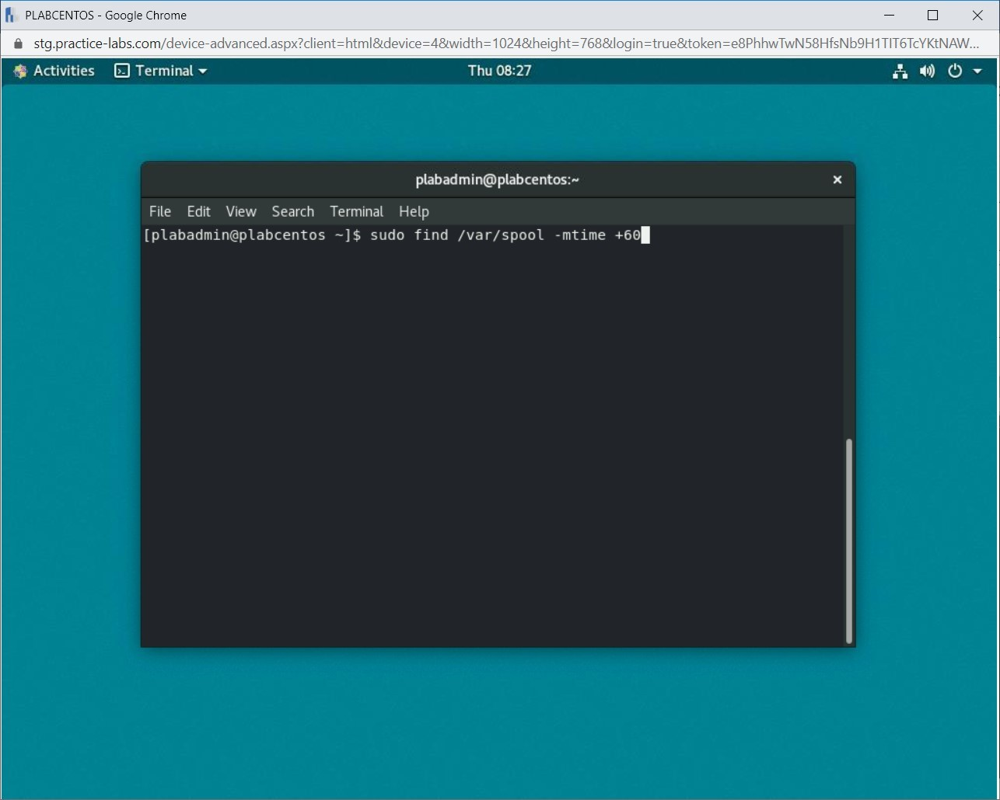
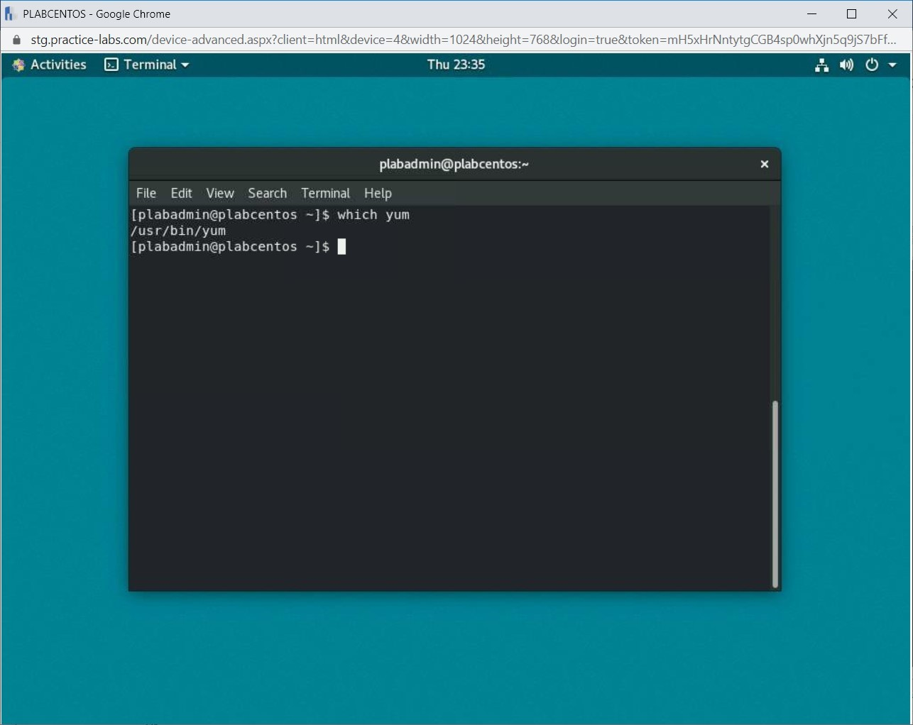
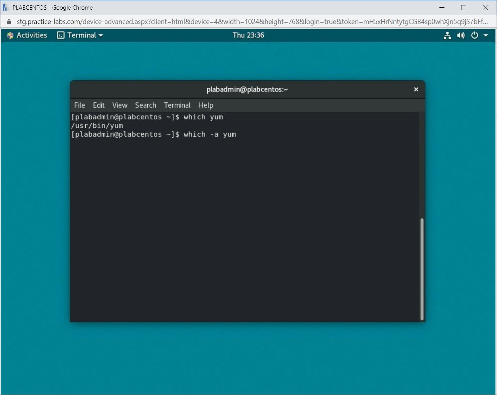
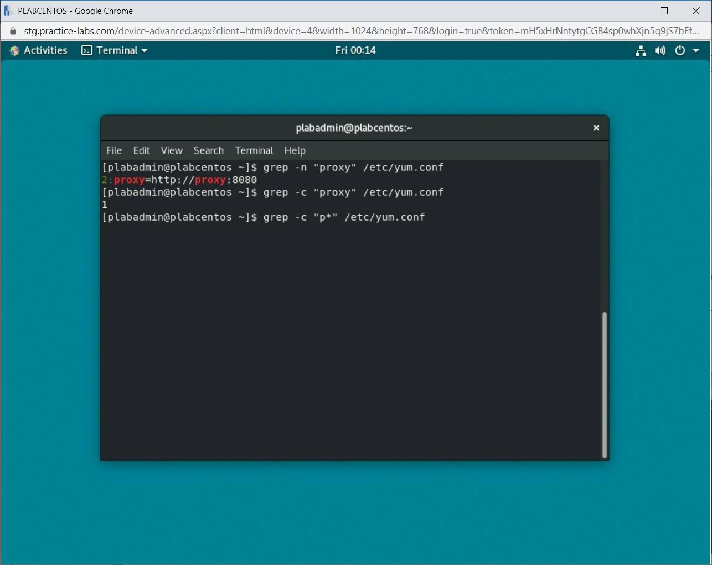
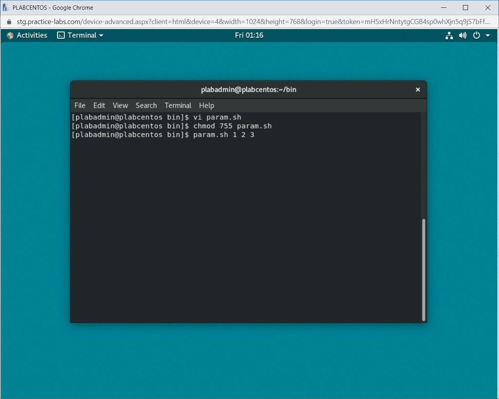
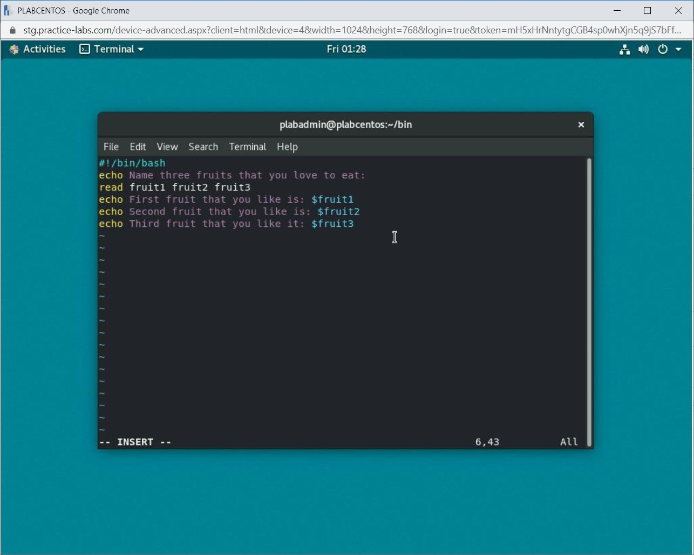
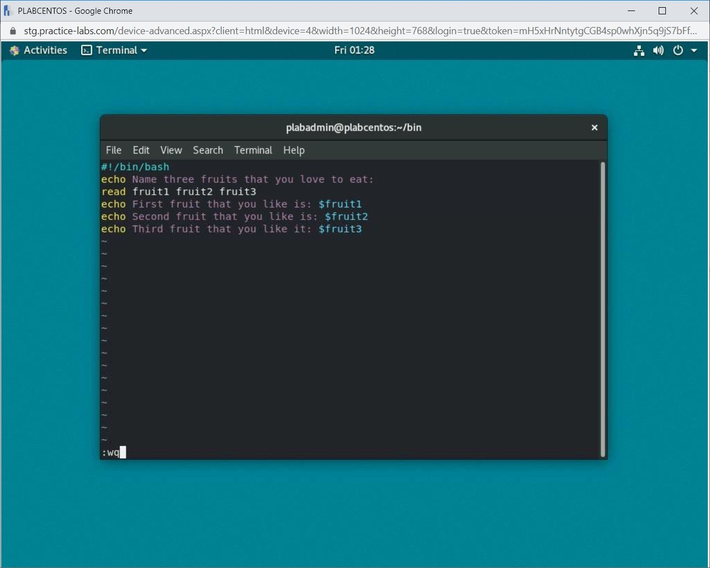

Introduction
9beca326-b493-4b0e-b3dc-d7dfb77df3c9
Welcome to the Scripting Practice Lab. In this module, you will be provided with the instructions and devices needed to develop your hands-on skills.
dc640c20-9434-45ea-b7c2-6d4d6a196bfc
Learning Outcomes
In this module, you will complete the following exercises:
- Exercise 1 - Perform Search
- Exercise 2 - Scripting
- Exercise 3 - Piping
After completing this module, you will be able to:
- Use the Find Command
- Find Files and Commands on a Linux System
- Search for a Specific Text in a File
- Search for Specific Criteria Through a File Content or a Filesystem
- Write a Simple Bash Script
- Use Commenting
- Use Parameters
- Capture User Inputs in Scripts
- Pipe the Output of one Command to the Input of Another Command
- Use the Output of one Command as Argument to Another Command
- Send Output to Both Stdout and a File
Exam Objectives
The following exam objectives are covered in this lab:
- 3.1 Given a scenario, analyze data as part of security monitoring activities.
Note: Our main
focus is to cover the practical, hands-on aspects of the exam
objectives. We recommend referring to course material or a search engine
to research theoretical topics in more detail.
Lab Duration
It will take approximately 1 hour to complete this lab.
7ca097e1-3b9c-4203-a9a2-3215787353ca
Help and Support
For more information on using Practice Labs, please see our Help and Support page. You can also raise a technical support ticket from this page.
Click Next to view the Lab topology used in this module.
d2c53300-f951-45a9-9aa4-3d4ecae69e11
Lab Topology
During your session, you will have access to the following lab configuration.
Depending on the exercises, you may or may not use all
of the devices, but they are shown here in the layout to get an overall
understanding of the topology of the lab.
- PLABDC01 - (Windows Server 2019 - Domain Server)
- PLABDM01 - (Windows Server 2019 - Domain Member)
- PLABKALI01 - (Kali Linux 2019 - Linux Kali)
- PLABWIN10 - (Windows 10 - Domain Member Workstation)
- PLABCENTOS - (Centos 8 Linux - Stand-alone Linux Server)
- PLABALIENVAULT - (Alien Vault Linux Security Management Platform)
Click Next to proceed to the first exercise.
<
Home |
README >
CompTIA Cybersecurity Analyst (CySA+) Practice Labs
Exercise 1 - Perform Search
Normally a system has a large number of text files.
Searching for a specific text file can be a tedious task. You can search
text files based on criteria specified using regular expressions.
In this exercise, you will learn to perform various types of search operations.
Learning Outcomes
After completing this exercise, you will be able to:
- Use the Find Command
- Find Files and Commands on a Linux System
- Search for a Specific Text in a File
- Search for Specific Criteria Through a File Content or a Filesystem
Your Devices
You will be using the following devices in this lab. Please power this on now.

- PLABCENTOS - (Centos 8 Linux - Stand-alone Linux Server)
Task 1 - Use the Find Command
Linux provides a find command that you can use
to locate and manipulate multiple files supporting common values for
criteria such as name, type, size, or timestamp.
In this task, you will use the find command.
Step 1
Ensure that you have powered on the required devices.
Connect to PLABCENTOS.
On the upper left corner, click Activities.
Figure 1.1 Screenshot of PLABCENTOS: Clicking on the Activities menu on the desktop.
Step 2
Click the Terminal icon in the application bar.
Figure 1.2 Screenshot of PLABCENTOS: Clicking the Terminal icon in the application bar.
Step 3
You can use the find command to find files based on specific criteria. Some of these criteria are listed below:
- -type: specify the type of file
- -name: name of the file (can include wildcards)
- -user: user owner
- -atime, ctime, mtime: access, creation and modified times (multiples of 24 hrs)
- -amin, cmin, mmin: access, creation and modified times (multiples of 1 min)
- -newer FILE: files newer than FILE
In the command below, you will find files starting with gnome for a user named root. To find these files, type the following command:
sudo find / -user root -name “gnome*”
Press Enter.
Figure 1.3 Screenshot of PLABCENTOS: Entering the command to find files starting with gnome for a user named root.
Step 4
When prompted for a password, type the following for plabadmin:
Passw0rd
Press Enter.
Note: When you are
entering commands with sudo, frequently, you will be prompted to
provide the password, not necessarily that it would appear in the same
places as the lab steps.
 Figure 1.4 Screenshot of PLABCENTOS: Entering the user credentials for sudo.
Figure 1.4 Screenshot of PLABCENTOS: Entering the user credentials for sudo.
Step 5
A series of files with gnome in their names will be listed.
Figure 1.5 Screenshot of PLABCENTOS: Showing the output of the find command.
Step 6
Clear the screen by entering the following command:
clear
To find files for a user, type the following command:
sudo find / -user root -type f
Press Enter.
Note: The clear command
is used before every step to enable learners to get a clear view of the
output of each command. Otherwise, it is not mandatory to use the clear
command before every command.
Figure 1.6 Screenshot of PLABCENTOS: Entering a command to find files for a user.
Step 7
All files for the user named root are listed as the output of the command.
 Figure 1.7 Screenshot of PLABCENTOS: Showing the output of the find command.
Figure 1.7 Screenshot of PLABCENTOS: Showing the output of the find command.
Step 8
Clear the screen by entering the following command:
clear
To find files that were modified several days ago, type the following command:
sudo find /var/spool -mtime +60
Press Enter.
Figure 1.8 Screenshot of PLABCENTOS: Entering a command to find files that were modified several days ago.
Step 9
The output of the command lists the files that were modified more than 60 days back.
Figure 1.9 Screenshot of PLABCENTOS: Showing the output of the find command.
Step 10
Clear the screen by entering the following command:
clear
To find files that were modified in last hour and then get the detailed listing, type the following command:
sudo find -mmin -60 -exec ls -l {} \;
Press Enter.
Figure
1.10 Screenshot of PLABCENTOS: Entering a command to find files that
were modified in the last one hour and then get the detailed listing.
Step 11
The output of this command is displayed.
Figure 1.11 Screenshot of PLABCENTOS: Showing the output of the find command.
Step 12
Clear the screen by entering the following command:
clear
To list all the files with size more than 1MB, type the following command:
sudo find -size 1M -exec ls -l {} \;
Press Enter.
Figure 1.12 Screenshot of PLABCENTOS: Entering a command to list all the files with size more than 1MB.
Step 13
If prompted for the password, type the following for plabadmin:
Passw0rd
Press Enter.
Figure 1.13 Screenshot of PLABCENTOS: Entering the user credentials for sudo.
Step 14
The output of the command is displayed. All files with more than 1 MB of size are listed.
Figure 1.14 Screenshot of PLABCENTOS: Showing the output of the find command.
Step 15
Clear the screen by entering the following command:
clear
You can find a specific type of files for a particular user. Let’s find the *.txt files for the root user. Type the following command:
sudo find / -user root -iname “*.txt”
Press Enter.
Figure 1.15 Screenshot of PLABCENTOS: Entering a command to find the *.txt files for the root user.
Step 16
Notice that all txt files that belong to the user root are now listed.
Figure 1.16 Screenshot of PLABCENTOS: Showing the output of the find command.
Step 17
Clear the screen by entering the following command:
clear
Let’s find empty sub-directories in a specific directory. To do this, type the following command:
sudo find /tmp -type d -empty
Press Enter.
Figure 1.17 Screenshot of PLABCENTOS: Entering a command to find empty sub-directories in a specific directory.
Step 18
A list of empty sub-directories under the /tmp directory is shown.
Figure 1.18 Screenshot of PLABCENTOS: Showing the output of the find command.
Step 19
Clear the screen by entering the following command:
clear
Similarly, you can also find the executable files. To do this, type the following command:
sudo find / -perm /a=x
Press Enter.
Figure 1.19 Screenshot of PLABCENTOS: Entering a command to find the executable files.
Step 20
The list of executable files is shown.
Figure 1.20 Screenshot of PLABCENTOS: Showing the output of the find command.
Task 2 - Find Files and Commands on a Linux System
A small Linux distribution can contain thousands of files. For example, only the /usr directory of distribution can contain over 50,000 files. The complete installation may contain over 200,000 files.
Locating a file can be difficult in a large number of
files. Similarly, you can search for the path for a specific command and
find out which command will be executed when you enter a specific
command. In this task, you will locate files and commands in various
directories.
In this task, you will find files and commands on a Linux system.
Step 1
Clear the screen by entering the following command:
clear
To find a specific command and its location, type the following command:
which yum
Press Enter.
Figure 1.21 Screenshot of PLABCENTOS: Entering a command to find a command and its specific location.
Step 2
Note that the first occurrence where this command appears is displayed.
Figure 1.22 Screenshot of PLABCENTOS: Showing the output of the which command.
Step 3
If you want to find out all the locations where a specific command occurs, type the following command:
which -a yum
Press Enter.
Figure 1.23 Screenshot of PLABCENTOS: Entering the command to find the location of a specific command.
Step 4
In this case, there is only one instance of the command.
Figure 1.24 Screenshot of PLABCENTOS: Showing the output of the which command.
Step 5
Clear the screen by entering the following command:
clear
The whereis command allows you to locate more information than just the location of the command. To find more details of a command, such as yum, type the following command:
whereis yum
Press Enter.
Figure 1.25 Screenshot of PLABCENTOS: Entering the whereis command to find information about the yum command.
Step 6
The output displays the location, the name of the configuration file, and the location of the man pages for the command.
Figure 1.26 Screenshot of PLABCENTOS: Showing the output of the whereis command.
Step 7
Clear the screen by entering the following command:
clear
There will be instances when you need to find files on
your Linux system using their names or path. To find files, type the
following command:
sudo find / -name "yum*"
Press Enter.
Figure 1.27 Screenshot of PLABCENTOS: Entering a command to find files on a Linux system.
Step 8
The output displays the names of the files and their locations.
Figure 1.28 Screenshot of PLABCENTOS: Showing the output of the find command.
Step 9
Clear the screen by entering the following command:
clear
Using the find command, you can also find all the directories. To find all the directories, type the following command:
sudo find / -type d
Press Enter.
Note: The d parameter signifies directories. d is an argument for the -type parameter. Therefore, the -type parameter allows you to specify that you are searching for the type “directories.”
Figure 1.29 Screenshot of PLABCENTOS: Entering a command to find all directories.
Step 10
The output displays all directories.
Figure 1.30 Screenshot of PLABCENTOS: Showing the output of the find command.
Step 11
Clear the screen by entering the following command:
clear
Using the find command, you can also find files by user and group. For example, to find all the files by the user root, type the following command:
sudo find /etc -user root
Press Enter.
Note: /etc is the name of the directory, which is where you will search for the files. The -user parameter specifies the name of the user, which is the root in this case.
Figure 1.31 Screenshot of PLABCENTOS: Entering a command to find files for a user and group.
Step 12
The output displays all files in the /etc directory that belong to the user root.
Note: There are a lot more combinations that you can use to find files. The above-shown examples are just a few of them.
Figure 1.32 Screenshot of PLABCENTOS: Showing the output of the find command.
Step 13
Clear the screen by entering the following command:
clear
When you use the find command, it searches for
the files and directories based on a given condition of the filesystem.
You can speed up the search using the locate command, which searches the location of files from a specific database.
For example, to find all the files in the /etc directory, type the following command:
sudo locate /etc
Press Enter.
Note: /etc is the name of the directory where you want to search for the files.
If you get an error, please run the updatedb command and retype the above:
sudo updatedb
Figure 1.33 Screenshot of PLABCENTOS: Entering a command to find files in the /etc directory.
Step 14
Notice that all the files in the /etc directory are now listed.
Figure 1.34 Screenshot of PLABCENTOS: Showing the output of the find command.
Step 15
Clear the screen by entering the following command:
clear
You can find the database that the locate command uses to find files and directories. To find the location of the database, type the following command:
sudo locate -S
Press Enter.
Figure 1.35 Screenshot of PLABCENTOS: Entering the locate command to find files and directories.
Step 16
The database name is mlocate.db, and it is stored in the /var/lib/mlocate directory.
Note: The
database may differ in different Linux distributions. For example, in
some of the Linux distributions, you may find the database name to be slocate or mlocate.
 Figure 1.36 Screenshot of PLABCENTOS: Showing the output of the locate command.
Figure 1.36 Screenshot of PLABCENTOS: Showing the output of the locate command.
Task 3 - Search for a Specific Text in a File
To search for a specific text in a file, you create
simple regular expressions containing several notational elements. In
this task, you will determine the parameters related to a particular
text in the yum.conf file.
To search for a specific text in a file, perform the following steps:
Step 1
Clear the screen by entering the following command:
clear
Using the grep command, you can find specific
words in one or more files. If you specify more than one file, the file
name is displayed in front of the line that contains the searched word.
For example, to find the word proxy in the /etc/yum.conf file, type the following command:
grep -n “proxy” /etc/yum.conf
Press Enter.
Note: Various parameters can be
used with the grep command. The -n parameter displays the line-number
of the line that contains the searched text.
Figure 1.37 Screenshot of PLABCENTOS: Entering the grep command to find specific words in one or more files.
Step 2
Notice the number 2 at the beginning of the display. This is the line number of the line that contains the specified text.
Figure 1.38 Screenshot of PLABCENTOS: Showing the output of the grep command.
Step 3
Instead of displaying the lines with the searched
text, you can simply count the number of lines in which the searched
text appears. You can count the number of lines by using the -c switch.
To use the -c switch, type the following command:
grep -c “proxy” /etc/yum.conf
Press Enter.
Figure 1.39 Screenshot of PLABCENTOS: Entering the grep command to count the number of lines on which a word appears.
Step 4
The total number of lines is displayed.
Figure 1.40 Screenshot of PLABCENTOS: Showing the output of the grep command.
Step 5
Let’s try to find the number of words that start with p in the yum.conf file. Type the following command:
grep -c “p*” /etc/yum.conf
Press Enter.
Figure
1.41 Screenshot of PLABCENTOS: Entering the grep command to find the
number of words that start with p in the yum.conf file.
Step 6
The count of words starting with the letter p is displayed.
Figure 1.42 Screenshot of PLABCENTOS: Showing the output of the grep command.
Step 7
Clear the screen by entering the following command:
clear
To list all the blank lines with their line numbers, type the following command:
grep -n “^$” /etc/yum.conf
Press Enter.
Figure 1.43 Screenshot of PLABCENTOS: Entering the grep command to list all the blank lines with their line numbers.
Step 8
Notice that this does not return an output. This means that there are no blank lines in the yum.conf file.
Figure 1.44 Screenshot of PLABCENTOS: Showing the output of the grep command.
Step 9
You can also simply list the lines that contain a specific word. Type the following command:
grep proxy /etc/yum.conf
Press Enter.
Note: In the above-given command, the word proxy is being searched without quotes.
Figure 1.45 Screenshot of PLABCENTOS: Entering the grep command to list the lines that contain a specific word.
Step 10
The line containing the word proxy is now shown as the output of the command.
Figure 1.46 Screenshot of PLABCENTOS: Showing the output of the grep command.
Leave the devices you have powered on in their current state and proceed to the next exercise.
Task 4 - Search for Specific Criteria Through a File Content or a Filesystem
In the previous task, you used grep.
In this task, you will use egrep. There is a distinct difference between these. When you use grep, special characters such as ?, +, {, |, (, and ), lose their meaning.
To use special characters as meta-characters, you need to use \?, \+, \{, \|, \(, and \). With egrep,
you do not have to use the \?, \+, \{, \|, \(,
and \). To search for specific criteria through a file content or
filesystem, perform the following steps:
Step 1
Clear the screen by entering the following command:
clear
You can list a specific set of files using the pipe. Type the following command:
ls | egrep "proxy” /etc/yum.conf
Press Enter.
Figure 1.47 Screenshot of PLABCENTOS: Entering a command to list a specific set of files using the pipe.
Step 2
In this command, the pipe | acts as an OR command. This means that egrep will simply search a specific file, in this case, yum.conf, and list the occurrences that have a proxy in the name.
Figure 1.48 Screenshot of PLABCENTOS: Showing the output of the egrep command.
Step 3
Now, attempt the same command with grep. Type the following command:
ls | grep "init|conf"
Press Enter.
Figure 1.49 Screenshot of PLABCENTOS: Entering the grep command to find two words.
Step 4
Note that no result is returned. The grep command cannot interpret the pipe |
Figure 1.50 Screenshot of PLABCENTOS: Showing no output of the grep command with the pipe.
Step 5
Clear the screen by entering the following command:
clear
To count the number of lines in /etc/yum.conf that either start with 1 or end with 01, type the following command:
egrep -c ‘^1|01$’ /etc/yum.conf
Press Enter.
Note: the use of
single inverted commas (‘) in the command as compared to the use of
double inverted commas (“) in the earlier commands.
Figure
1.51 Screenshot of PLABCENTOS: Entering the egrep command to
count the number of lines in /etc/yum.conf that either start
with 1 or end with 01.
Step 6
Notice that the output returns 0, which means that the specified criteria were not met.
Figure 1.52 Screenshot of PLABCENTOS: Showing the output of the egrep command as 0.
Step 7
To find two words simultaneously in a file, type the following command:
egrep ‘proxy|installonly' /etc/yum.conf
Press Enter.
Figure 1.53 Screenshot of PLABCENTOS: Entering the egrep command to find two words simultaneously in a file.
Step 8
The number of occurrences for both words are found.
Figure 1.54 Screenshot of PLABCENTOS: Showing the output of the egrep command.
Step 9
Egrep and fgrep are equivalent to grep with -E and -F.
The fgrep command is similar to grep, but it does not process any regular expression meta-characters as being special characters. To fgrep, type the following command:
fgrep -c ‘proxy’ /etc/yum.conf
Press Enter.
Figure 1.55 Screenshot of PLABCENTOS: Entering the fgrep command.
Step 10
The output of the fgrep -c command is displayed. It shows the total number of lines where the proxy word is displayed.
Figure 1.56 Screenshot of PLABCENTOS: Showing the output of the fgrep command.
Step 11
To use the fgrep tool to find two words, type the following command:
fgrep -c ‘proxy|installonly’ /etc/yum.conf
Press Enter.
Figure 1.57 Screenshot of PLABCENTOS: Entering the fgrep command to find two words in a file.
Step 12
This command is trying to find both words - proxy as well as installonly - in the /etc/yum.conf file. However, it cannot determine two words and, therefore, returns 0 as the search result.
Figure 1.58 Screenshot of PLABCENTOS: Showing the output of the grep command.
6bd791b2-1a83-46a6-8333-7474832b03a2
<
Home |
README >
CompTIA Cybersecurity Analyst (CySA+) Practice Labs
Exercise 2 - Scripting
Bash is a shell, which acts as a
command language interpreter. When a user executes a command, the output
is generated as the output of the command. Bash can execute individual commands as well as commands from a file, which is known as a script.
In this exercise, you will work with the Bash profiles and Bash scripts.
Learning Outcomes
After completing this exercise, you will be able to:
- Write a Simple Bash Script
- Use Commenting
- Use Parameters
- Capture User Inputs in Scripts
Your Devices
You will be using the following devices in this lab. Please power this on now.

- PLABCENTOS - (Centos 8 Linux - Stand-alone Linux Server)
Task 1 - Write a Simple Bash Script
Assume that a user has to execute a series of commands
multiple times. One method that the user can use is to keep typing in
the commands over and over again.
This method works well, but it is time-consuming.
Another method that the user can use is to create a file that contains
the series of commands, which shell can execute without any manual
intervention.
The file that the user will execute to automate the
execution of multiple commands is known as a shell script. The user can
create the shell script, store it, and execute it as many times as
required. Using this method, the user does not have to re-type the same
commands.
To write a simple bash script, perform the following steps:
Step 1
Ensure the terminal window is opened on PLABCENTOS.
Clear the screen by entering the following command:
clear
To create a shell script, type the following command:
vi script.sh
Press Enter.
Figure 2.1 Screenshot of PLABCENTOS: Creating a new script using the vi editor.
Step 2
Press i to start insert mode.
#!/bin/sh will always be the first line that tells the operating system that the script needs to be executed by the Bourne shell. In this case, it is mentioned as #!/bin/sh, which is the default location of the Bourne shell.
Type the following statement:
#!/bin/sh
Press Enter.
Figure 2.2 Screenshot of PLABCENTOS: Entering the first statement in the shell script.
Step 3
Type the following statement:
echo “Good Morning!”
Press Enter.
Note: After typing Good, press the tab key.
Figure 2.3 Screenshot of PLABCENTOS: Entering the echo statement in the shell script.
Step 4
To save the file, you need to exit the insert mode. Press ESC. Type the following statement:
:wq
Press Enter.
Figure 2.4 Screenshot of PLABCENTOS: Saving and closing the shell script.
Step 5
You are now in the terminal window.
Figure 2.5 Screenshot of PLABCENTOS: Displaying the terminal window after shell script closure.
Step 6
Next, you need to change the permissions on this shell
script. Before a shell script can be executed, the user must make the
script executable. To do this, type the following command:
chmod 755 script.sh
Press Enter.
Figure 2.6 Screenshot of PLABCENTOS: Assigning execute permissions to the script.
Step 7
After the script is made executable, it can be executed in two different ways. The first method is to use the bash command. To execute the script, type the following command:
bash script.sh
Press Enter.
Figure 2.7 Screenshot of PLABCENTOS: Executing the script with the bash command.
Step 8
The script will run and print the output on the console.
Note: With the
use of echo command, you need to put the string of characters in the
quote. It will be printed in the verbatim manner as you have entered.
Remember that you had pressed the tab after Good.
Figure 2.8 Screenshot of PLABCENTOS: Showing the output of the executed script.
Step 9
Clear the screen by entering the following command:
clear
The second method to execute a script is to prefix it with ./. Type the following command:
./script.sh
Press Enter.
Figure 2.9 Screenshot of PLABCENTOS: Executing the script with the prefixed ./.
Step 10
Notice that the method is the same.
Figure 2.10 Screenshot of PLABCENTOS: Showing the output of the executed script.
Step 11
Clear the screen by entering the following command:
clear
You can also use a third method that is recommended by various Linux flavors. You should create a subdirectory named bin in your home directory. Then, move the script to the subdirectory.
To create the subdirectory, type the following command:
mkdir bin
Press Enter.
Step 12
Clear the screen by entering the following command:
clear
To list the files in the home directory, type the following command:
ls
Press Enter.
Figure 2.12 Screenshot of PLABCENTOS: Entering the ls command to list the files in the current directory.
Step 13
The output of the ls command is displayed.
Figure 2.13 Screenshot of PLABCENTOS: Showing the output of the ls command.
Step 14
Move the file to the bin directory. Type the following command:
mv script.sh bin
Press Enter.
Figure 2.14 Screenshot of PLABCENTOS: Moving the file into the bin directory using the mv command.
Step 15
The mv command does not provide any output. Let’s verify if the file has moved to the bin directory. To list the files in the home directory, type the following command:
ls
Press Enter.
Figure 2.15 Screenshot of PLABCENTOS: Verifying if the script file has moved to the bin directory.
Step 16
Notice that the script.sh file does not exist in the root directory anymore. With the use of the mv command, it has been moved to the bin directory.
Figure 2.16 Screenshot of PLABCENTOS: Entering the ls command to list the files in the current directory.
Step 17
Clear the screen by entering the following command:
clear
To navigate to the bin directory, type the following command:
cd bin
Press Enter.
Figure 2.17 Screenshot of PLABCENTOS: Changing to the bin directory.
Step 18
To execute the script, type the following command:
script.sh
Press Enter.
Figure 2.18 Screenshot of PLABCENTOS: Executing the script from the bin directory.
Step 19
Notice that the script ran without the bash command or ./. In the bin directory, the script can run on its own by simply executing it.
Figure 2.19 Screenshot of PLABCENTOS: Showing the output of the executed script.
Task 2 - Use Commenting
Scripts can also have comments, which are statements that do not get executed.
In this task, you will add comments in the script.sh file.
Step 1
Clear the screen by entering the following command:
clear
Open the script.sh file once again. Type the following command:
vi script.sh
Press Enter.
Figure 2.20 Screenshot of PLABCENTOS: Opening the script in the vi editor.
Step 2
Press i to start the insert mode. Scroll down to the next blank line.
Type the following statement:
#This is just a test script.
Figure 2.21 Screenshot of PLABCENTOS: Adding a comment statement in the script.
Step 3
To save the file, you need to exit the insert mode. Press ESC. Type the following statement:
:wq
Press Enter.
Figure 2.22 Screenshot of PLABCENTOS: Saving and closing the script.
Step 4
You are now in the terminal window.
Figure 2.23 Screenshot of PLABCENTOS: Navigating back to the terminal window.
Step 5
Execute the script. Type the following command:
script.sh
Press Enter.
Figure 2.24 Screenshot of PLABCENTOS: Executing the script from the bin directory.
Step 6
Notice that the output does not show any comment.
Figure 2.25 Screenshot of PLABCENTOS: Showing the output of the executed script.
Task 3 - Use Parameters
Shell scripts, as stated earlier, can be written once
and then re-used as many times as possible. The advantage of a shell
script is also that you can pass different parameters to get different
results.
To use parameters, perform the following steps:
Step 1
Clear the screen by entering the following command:
clear
Create the param.sh file. Type the following command:
vi param.sh
Press Enter.
Figure 2.26 Screenshot of PLABCENTOS: Creating a new script using the vi editor.
Step 2
Start the insert mode by press i. Type the following in the script:
#!/bin/bash
echo "$# parameters"
echo "$@";
Figure 2.27 Screenshot of PLABCENTOS: Entering the commands in the script in the vi editor.
Step 3
Press ESC and then type the following command:
:wq
Press Enter.
Figure 2.28 Screenshot of PLABCENTOS: Saving and closing the script.
Step 4
You are now back on the command prompt.
Figure 2.29 Screenshot of PLABCENTOS: Navigating back to the terminal window.
Step 5
Next, you need to change the permissions on this shell
script. Before a shell script can be executed, the user must make the
shell script executable. To do this, type the following command:
chmod 755 param.sh
Press Enter.
Figure 2.30 Screenshot of PLABCENTOS: Assigning the execute permission.
Step 6
You will now see how the script provides different results when parameters are passed on.
Type the following command:
param.sh 1 2 3
Press Enter.
Figure 2.31 Screenshot of PLABCENTOS: Executing the shell script with the parameters.
Step 7
Notice that the output is displayed. The output counts the number of parameters and then displays them.
Figure 2.32 Screenshot of PLABCENTOS: Showing the output of the executed script.
Step 8
Type the following command:
param.sh “1 2 3”
Press Enter.
Figure 2.33 Screenshot of PLABCENTOS: Executing the shell script with the parameters.
Step 9
Notice that the output counts the parameters in the quotes as one parameter. It also displays the parameters within the quotes.
Figure 2.34 Screenshot of PLABCENTOS: Showing the output of the executed script.
Step 10
Type the following command:
param.sh 1 “2 3”
Press Enter.
Figure 2.35 Screenshot of PLABCENTOS: Executing the script with the parameters.
Step 11
Notice that in all three cases, the output was
different. In this case, there are two parameters, and then the value of
the parameters.
Figure 2.36 Screenshot of PLABCENTOS: Showing the output of the executed script.
Task 4 - Capture User Inputs in Scripts
You can also capture user inputs in scripts. For example, you can prompt a user to enter the name and then display the name.
In this task, you will capture user inputs in scripts.
Step 1
Clear the screen by entering the following command:
clear
Create another script named test.sh. Type the following command:
Type the following in the script using the insert mode:
#!/bin/bash
echo Hello, Please enter your name.
read varname
echo Hello $varname
Note: The value entered by the user is stored in the variable named varname.
 Figure 2.37 Screenshot of PLABCENTOS: Creating a new script using the vi editor.
Figure 2.37 Screenshot of PLABCENTOS: Creating a new script using the vi editor.
Step 2
Press ESC and then type the following command:
:wq
Press Enter.
Figure 2.38 Screenshot of PLABCENTOS: Saving and closing the script.
Step 3
Back on the terminal window, type the following command:
chmod 755 test.sh
Press Enter.
Figure 2.39 Screenshot of PLABCENTOS: Assigning the execute permission.
Step 4
Clear the screen by entering the following command:
clear
Type the following command to execute the script:
test.sh
Press Enter. You are prompted for your name.
Figure 2.40 Screenshot of PLABCENTOS: Executing the shell script.
Step 5
Type your name and press Enter.
Figure 2.41 Screenshot of PLABCENTOS: Showing the output of the script and prompting to enter the name.
Step 6
You are prompted with a welcome message.
Figure 2.42 Screenshot of PLABCENTOS: Showing the output of the script after receiving the user input.
Step 7
Clear the screen by entering the following command:
clear
Create another script named fruits.sh. Use the following code:
#!/bin/bash
echo Name three fruits that you love to eat:
read fruit1 fruit2 fruit3
echo First fruit you like is: $fruit1
echo Second fruit you like is: $fruit2
echo Third fruit you like is: $fruit3
Figure 2.43 Screenshot of PLABCENTOS: Creating a new script using the vi editor.
Step 8
Save the file. In this script, you are accepting
multiple values using the read command. The read will split the values
on whitespace.
Figure 2.44 Screenshot of PLABCENTOS: Entering the commands in the script in the vi editor.
Step 9
After creating the file, assign the execute permissions using the following command:
chmod 755 fruits.sh
Press Enter.
Figure 2.45 Screenshot of PLABCENTOS: Assigning the execute permissions.
Step 10
Then, execute the script. Type the following command:
fruits.sh
Press Enter.
Figure 2.46 Screenshot of PLABCENTOS: Executing the script from the bin directory.
Step 11
Notice you are prompted to provide an input.
Figure 2.47 Screenshot of PLABCENTOS: Prompting the user input after executing the script.
Step 12
Type the following values:
Apple Orange Watermelon
Press Enter.
Note: You can use any values of your choice. They must be entered in the same sequence.
Figure 2.48 Screenshot of PLABCENTOS: Entering the user inputs as prompted by the script.
Step 13
Notice that the entered values are assigned to the appropriate variables.
Figure 2.49 Screenshot of PLABCENTOS: Showing the output of the script.
6bd791b2-1a83-46a6-8333-7474832b03a2
<
Home |
README >
CompTIA Cybersecurity Analyst (CySA+) Practice Labs
Exercise 3 - Piping
Linux shells use pipes (|) as an operator between two
commands, where the output of one command is the input of the second
command.
Redirects are meant to direct the output to a specific file or take the input from a specific file.
In this exercise, you will understand to use pipes.
Learning Outcomes
After completing this exercise, you will be able to:
- Pipe the Output of one Command to the Input of another Command
- Use the Output of One Command as Argument to another Command
- Send Output to Both Stdout and a File
Your Devices
You will be using the following devices in this lab. Please power this on now.

- PLABCENTOS - (Centos 8 Linux - Stand-alone Linux Server)
Task 1 - Pipe the Output of one Command to the Input of another Command
Pipes provide a method to apply multiple commands
concurrently. In this task, you will pipe the output of one command to
the input of the other.
In this task, you will pipe the output of one command to the input of another command.
Step 1
Clear the screen by entering the following command:
clear
To redirect the standard output of the first command to the standard input of the second command, type the following command:
ls -l /dev | more
Press Enter.
Figure
3.1 Screenshot of PLABCENTOS: Executing the command to redirect the
standard output of the first command to the standard input of the second
command.
Step 2
The more parameter is used for pagination. You will need to press Enter to continue reading further.
Figure 3.2 Screenshot of PLABCENTOS: Showing the user of more command.
Step 3
You can continue to press Enter to view the complete output or terminate CTRL + c to terminate the output.
You are back at the command prompt.
Figure 3.3 Screenshot of PLABCENTOS: Terminating the command.
Task 2 - Use the Output of One Command as Argument to another Command
You can use the output of one command as an argument
to the other command. In this task, you will use the output of one
command as an argument to the other command. To do this, perform the
following steps:
Step 1
Clear the screen by entering the following command:
clear
Type the following command:
ls -l /etc/*.conf | grep user
Press Enter.
Figure
3.4 Screenshot of PLABCENTOS: Entering the command to accept the output
of the first command as input to the second command using piping.
Step 2
This command uses piping with the grep command. The command will find any file that has the word user in the name.
Figure 3.5 Screenshot of PLABCENTOS: Showing the output of the command using piping with the grep command.
Step 3
The xargs command generates an argument list using standard input for a command. The xargs command is typically used with a pipe | operator.
To use the xargs command, type the following command:
ls | xargs cat
Press Enter.
Figure 3.6 Screenshot of PLABCENTOS: Using the xargs command.
Step 4
The cat parameter reads the contents of the files displayed in the ls parameter.
Figure 3.7 Screenshot of PLABCENTOS: Showing the argument of the xargs command.
Task 3 - Send Output to Both Stdout and a File
Linux offers commands that enable you to send an output to both - the standard output file (stdout) and any other file.
In this task you will send the output to both - stdout and a file.
Step 1
Clear the screen by entering the following command:
clear
You can redirect the standard output to a file and the screen at the same time. The tee command reads the input and then writes to standard output and also to the file that is specified. Type the following command:
ls -l /dev | tee output.txt
Press Enter.
Figure 3.8 Screenshot of PLABCENTOS: Redirecting the standard output to a file and on the screen at the same time.
Step 2
The standard output is generated. Along with this, a file named output.txt is also generated.
Figure 3.9 Screenshot of PLABCENTOS: Showing the redirected standard output to a file and on the screen at the same time.
Step 3
Clear the screen by entering the following command:
clear
Type the following command to verify that the output.txt file exists:
ls
Press Enter.
Figure 3.10 Screenshot of PLABCENTOS: Listing the files using the ls command.
Step 4
Notice that the output.txt file is now created with the input from the tee command.
Figure 3.11 Screenshot of PLABCENTOS: Verifying that the output.txt file exists.
Step 5
To view the contents of the output.txt file, type the following command:
cat output.txt
Press Enter.
Figure 3.12 Screenshot of PLABCENTOS: Viewing the contents of the output.txt file using the cat command.
Step 6
The output.txt file contains the same output that was displayed on the console.
Figure 3.13 Screenshot of PLABCENTOS: Viewing the contents of the output.txt file.
6bd791b2-1a83-46a6-8333-7474832b03a2
86b3caf2-2504-4e20-a81b-2fcb2368c8d2
Keep all devices that you have powered on in their current state and proceed to the review section.
Review
Well done, you have completed the Scripting Practice Lab.
2abaca70-efa1-4fe5-94fb-ad1777bfc242
6223b706-9b9c-4e71-beca-bb461b4c1939
052344c7-6173-404a-9d6a-88f94c24ff71
6e82aa90-a3fc-4e62-9399-4202a93c90eb
fd863df6-ec7c-414f-b708-31bb55fbd8c5
6e192208-f647-4ac4-8ffa-860ad5e57351
aaaaaaaa-1111-1111-1111-193f35a24fe3
Summary
You completed the following exercises:
- Exercise 1 - Perform Search
- Exercise 2 - Scripting
- Exercise 3 - Piping
You should now be able to:
- Use the Find Command
- Find Files and Commands on a Linux System
- Search for a Specific Text in a File
- Search for Specific Criteria Through a File Content or a Filesystem
- Write a Simple Bash Script
- Use Commenting
- Use Parameters
- Capture User Inputs in Scripts
- Pipe the Output of one Command to the Input of Another Command
- Use the Output of one Command as Argument to Another Command
- Send Output to Both Stdout and a File
Feedback
067744a4-4299-4662-b5be-04dbb636a007
Shutdown all virtual machines used in this lab. Alternatively, you can log out of the lab platform.